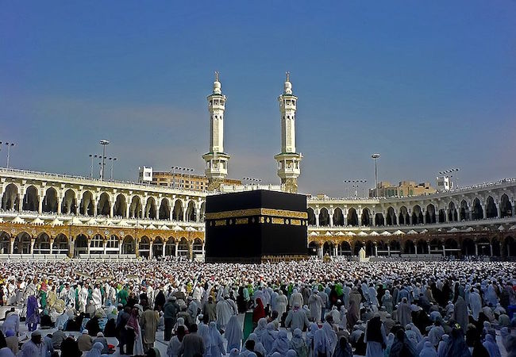

Details of Makkah
As the birthplace of Muhammad and the site of Muhammad's first revelation of the Quran (specifically, a cave 3 km (2 mi) fr om Mecca),[5][6] Mecca is regarded as the holiest city in the religion of Islam[7] and a pilgrimage to it known as the Hajj is obligatory for all able Muslims. Mecca is home to the Kaaba, by majority description Islam's holiest site, as well as being the direction of Muslim prayer. Mecca was long ruled by Muhammad's descendants, the sharifs, acting either as independent rulers or as vassals to larger polities. It was conquered by Ibn Saud in 1925. In its modern period, Mecca has seen tremendous expansion in size and infrastructure, home to structu res such as the Abraj Al Bait, also known as the Makkah Royal Clock Tower Hotel, the world's fourth tallest building and the building with the third largest amount of floor area. During this expansion, Mecca has lost some historical structures and archaeological sites, such as the Ajyad Fortress.[8] Today, more than 15 million Muslims visit Mecca annually, including several million d uring the few days of the Hajj.[9] As a result, Mecca has become one of the most cosmopolitan cities in the Muslim world,[10] even though non-Muslims are prohibited from entering the city